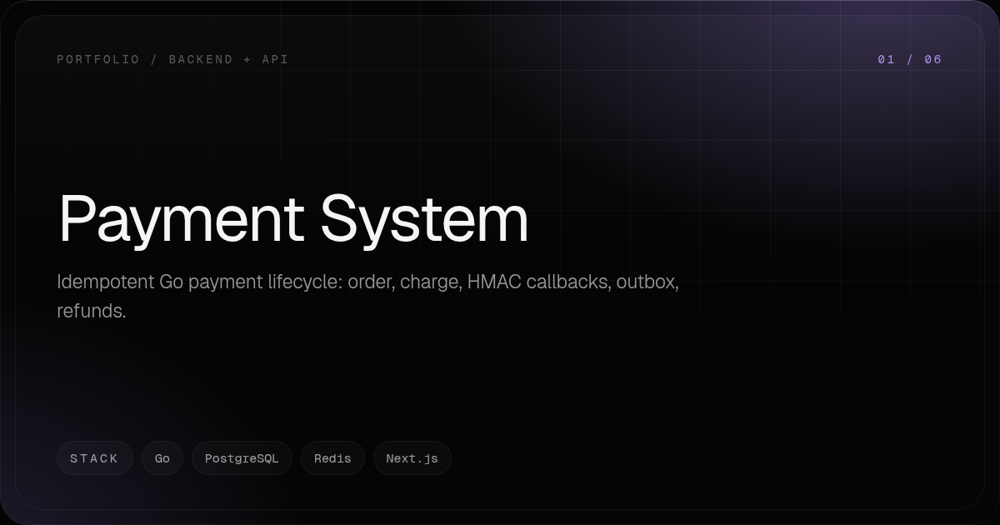

[ Go ] 1 of 7
Payment System
Idempotent Go payment lifecycle: order, charge, HMAC callbacks, outbox, refunds.
cd project && docker compose up --build
[ 01 ] WHAT IT IS
In plain words
A working payment lifecycle built end to end: a customer signs in, picks a product, places an order, charges it, and refunds it. Every state change runs through one TransactionLifecycle module that pairs a PostgreSQL transaction with an outbox row and an idempotency key, so retries and duplicate clicks cannot double-charge.
It exists as a reference implementation of the unglamorous parts of payments: HMAC-verified partner callbacks with a 300s replay window, background workers that turn outbox rows into invoice files, and a dead-letter queue for poison messages.
It is aimed at backend engineers who want to read real code for retries, callbacks and reconciliation rather than a slide deck about them.
[ 02 ] PURPOSE
Why it exists
Payment retries are where systems go wrong: a customer double-clicks, a partner callback arrives twice, a worker dies mid-flight. This repo keeps those paths in one place - a single TransactionLifecycle module that pairs the PostgreSQL transaction, the outbox row and the idempotency key - so there is exactly one way a payment changes state.
It was written as a reference implementation rather than a product: the unglamorous half of payments as code you can start with docker compose, break on purpose and read. HMAC-verified callbacks with a replay window, an outbox poller that ends poison messages in a DLQ, and a sweeper that keeps stale state honest.
[ 03 ] TECH STACK
What it is built on
- Go
- The whole backend is one binary. Lifecycle, store and jobs are plain Go over database/sql with no ORM, so the transaction boundary and the idempotency insert stay visible in one function.
- PostgreSQL
- System of record for the transaction and store schemas: one SQL transaction writes the state change, the outbox row and the idempotency key, which is what makes retries safe.
- Redis
- Short-lived charge state for the partner stub (ms-paymentagr), so the fake provider can behave like one without a database of its own.
- Next.js 16 + TypeScript + Tailwind
- The portal - login, catalog, checkout, status, refunds. Its server-side client (frontend/src/lib/gateway.ts) calls the monolith, so browser code never holds a partner key.
- Docker Compose
- Five containers (postgres, redis, ms-paymentagr, monolith, frontend) from one command; pg-init-scripts seed schemas, demo users and products, so the lifecycle is runnable with no cloud account.
[ 04 ] STRUCTURE
Where the code lives
- monolith/lifecycle/ - the deep module: lifecycle.go holds the state chart (CREATED to READY to SUCCESS/FAILED/REFUND) plus idempotency, and pricing.go holds the discount math.
- monolith/cmd/ - wiring and the endpoint table: routes.go, handlers.go for the new API, legacy.go for the ms-* compatible paths, http.go for envelopes plus partner and outbox transport.
- monolith/store/ - the persistence seam: store.go types with pg.go for production and memory.go as the dev/test fake, over the transaction + store schemas.
- monolith/jobs/, monolith/invoice/, monolith/invoiceworker/ - the background half: the outbox poller, the sweeper and the invoice worker that writes receipt files.
- ms-paymentagr/ - the partner stub (Go/Gin + Redis): usecase/ drives charge, refund, the CheckoutUrl page and HMAC-SHA256 callbacks behind the api-key header.
- frontend/ - the Next.js portal; frontend/src/lib/gateway.ts is the only place that talks to the monolith.
[ 05 ] ARCHITECTURE
How it works
- State only changes through the lifecycle module: the state change, the outbox row and the idempotency key are written in one PostgreSQL transaction, so a repeat of the same Idempotency-Key returns the original result instead of charging twice.
- Callbacks are verified before they are trusted: HMAC-SHA256 over the body with a 300s replay window; a forged signature is rejected with 401 and never reaches the lifecycle.
- Asynchronous work is a table, not a queue client: outbox.go polls every 5s, routes ms-notify-payment rows to the invoice worker and keeps servicelogs queryable, retries with 3x backoff and terminates poison messages in a dlq.* row.
- The sweeper keeps stale state honest: READY transactions older than 5m move to FAILED, and servicelogs are purged past LOG_RETENTION_DAYS.
- The invoice worker writes INVOICE_DIR/invoice_<tx>.json and sanitizes the transaction id against path traversal before it touches the filesystem.
- The README publishes no benchmark numbers: splitting the monolith is explicitly deferred until a load measurement justifies it, which is why this repo shows a lifecycle rather than a throughput claim.

[ 06 ] INSTALL
Set it up
cd project
cp .env.example .env
# edit .env and set every secret (PARTNER_API_KEY, NOTIFY_SECRET, POSTGRES_PASSWORD, ...)
docker compose up --build
[ 07 ] QUICKSTART
See it work
- Wait for the five containers (postgres, redis, ms-paymentagr, monolith, frontend) to go healthy; the first boot seeds the schemas, outbox/idempotency tables and demo users/products.
- Open http://localhost:3000 and sign in with one of the seeded demo accounts from project/pg-init-scripts/sql/20-store-schema.sql.
- Place an order and watch the state move: POST /ms/api/v1/order/product with an Idempotency-Key inserts product_trx as CREATED plus its outbox and idempotency rows in one transaction.
- Create the payment: POST /ms/api/v1/payment/create/SHOPEEPAY?transaction_id= moves CREATED to READY and returns a CheckoutUrl; calling it twice returns the same url.
- A signed SUCCEEDED callback to POST /ms/api/v1/payment/notify (with x-callback-signature and x-callback-timestamp) drives READY to SUCCESS, and within 5s the poller writes INVOICE_DIR/invoice_<tx>.json; a forged signature is rejected with 401.
- Refund with POST /ms/api/v1/payment/refund (SUCCESS to REFUND) - a second refund returns 409 - then read the audit trail at GET /v1/logs?limit=.
[ 08 ] TRADEOFFS
What it does not do
- The README publishes no benchmark numbers: the service-split decision is explicitly deferred until a load measurement justifies it, so there is no latency or throughput evidence to quote.
- Callback verification is wide open when NOTIFY_SECRET is unset - the README documents that as a local-dev-only state, not a deployable one.
- Sessions are short-lived opaque tokens held in memory, so they do not survive a restart or span instances.
- The Java/Spring services are decommissioned and no longer in the tree - only the Go monolith, the partner stub and the Next.js frontend ship, with git history (and one leftover diagram) preserving the old design.
[ 09 ] SOURCE
Read the code
The full implementation, tests and documentation live in the repository.